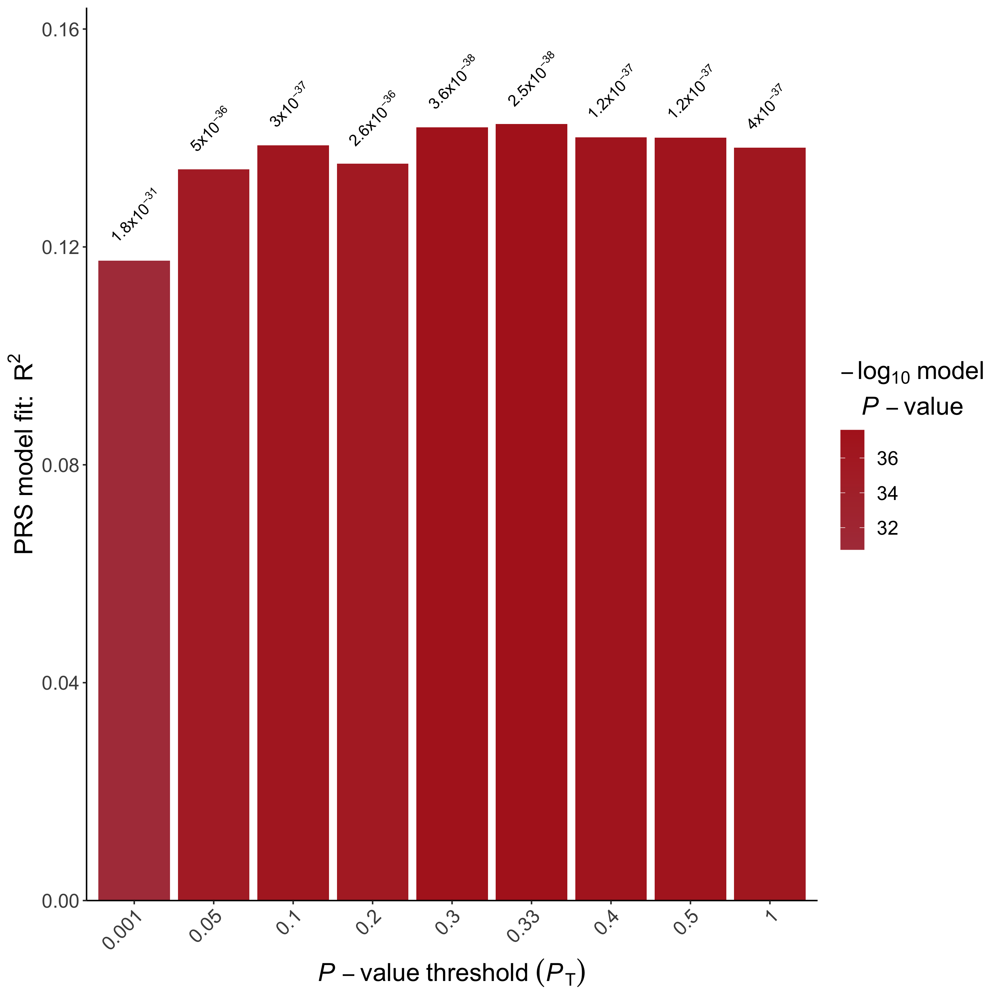
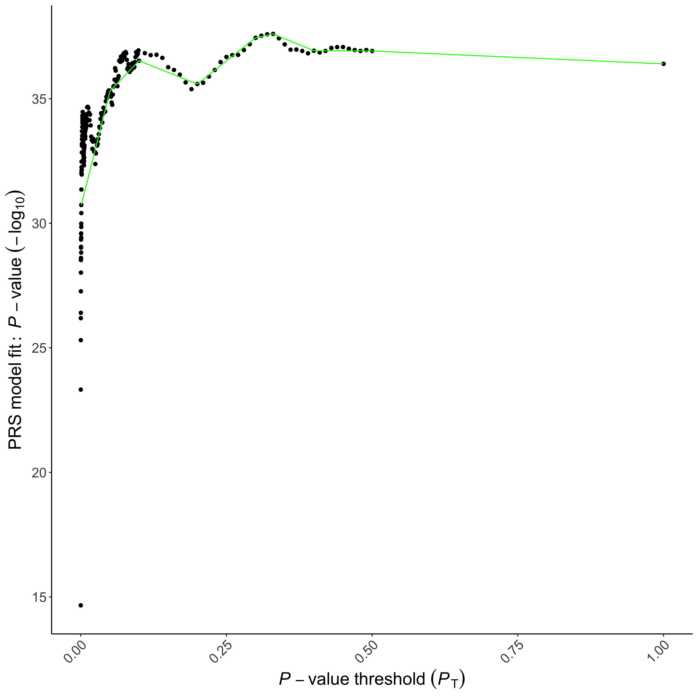
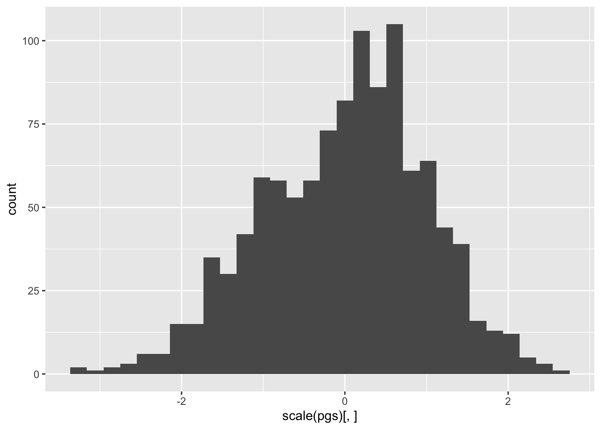
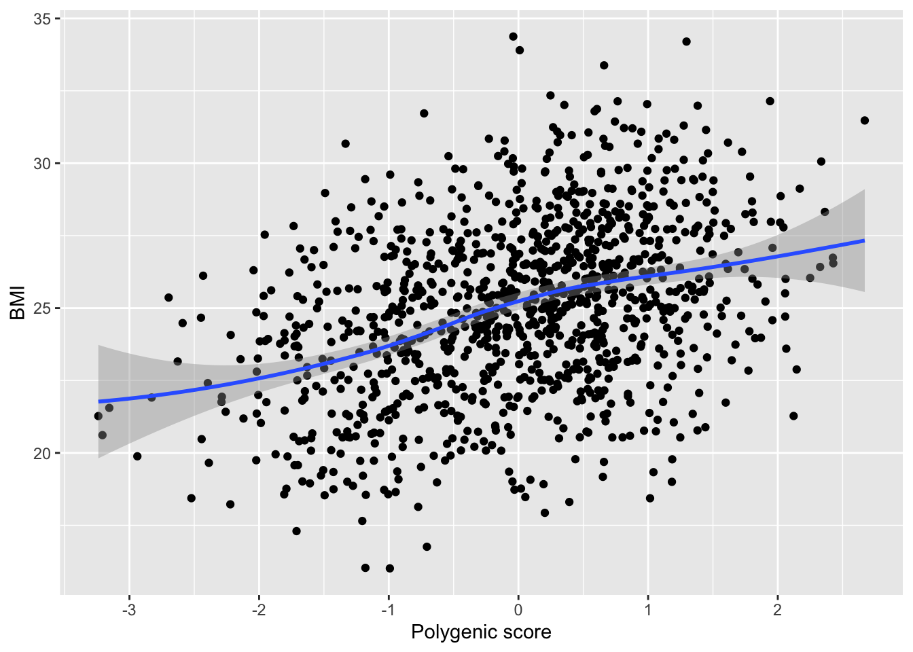
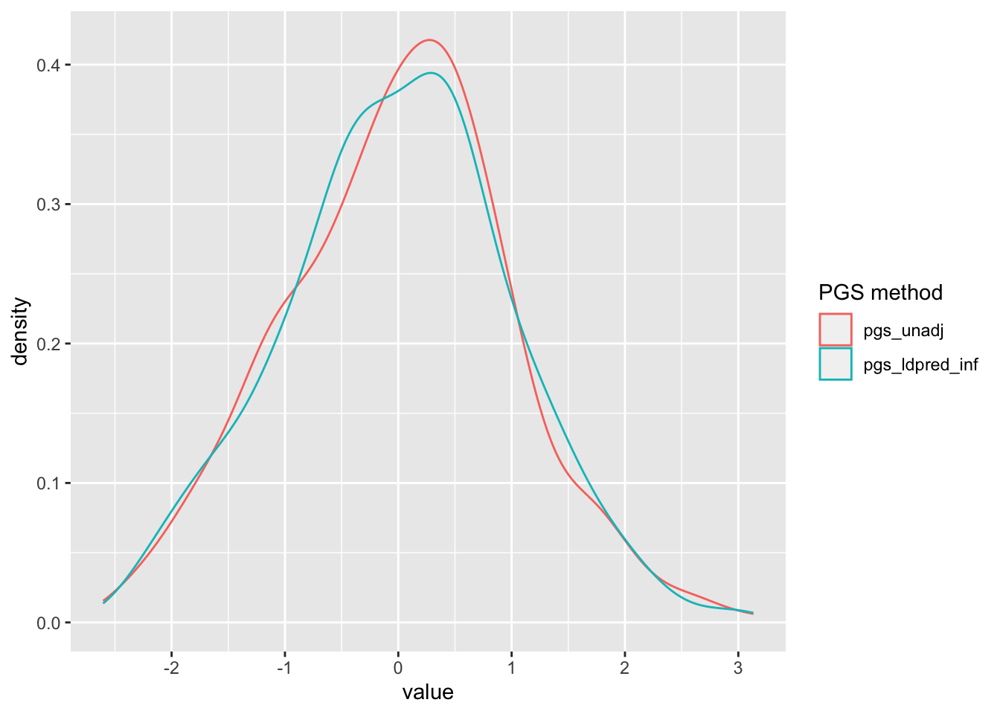
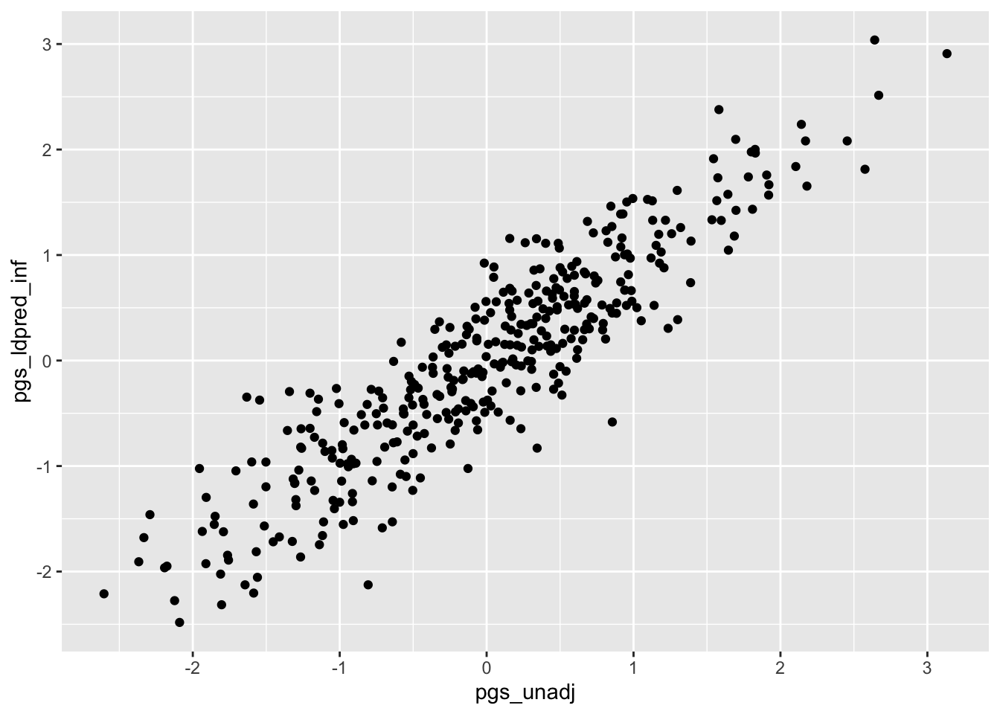
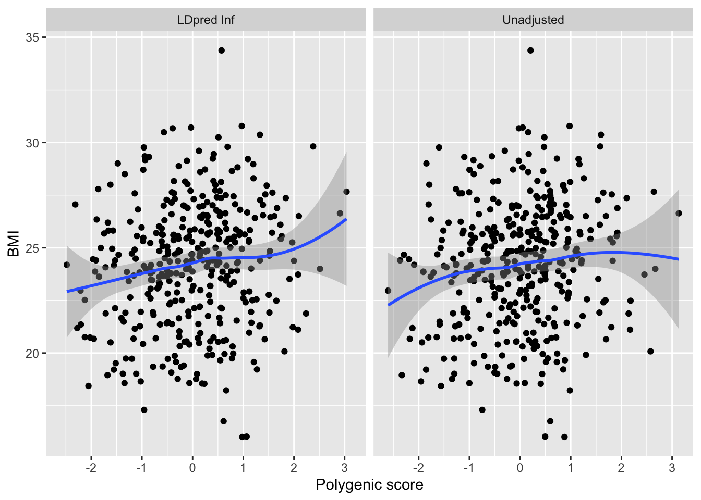

Chapter 1 In practice
The goal of this chapter is to generate a PGS for BMI using first PRSice and then LDpred.
PRSice is an easy to use command line tool to create polygenic scores using clumping/thresholding. LDpred (as implemented in the R-package bigsnpr) is a Bayesian approach that adjust the GWAS effect sizes to account for LD, and as you will see, is more elaborate to use.
To follow this tutorial, you should open an empty textfile/R-file and go along as you read, filling in the code piece by piece. By the end of the document you should have two polygenic scores for BMI, one created with PRSice, the other with LDpred.
We will use the following files:
- data/bmi_summary_statistics_final.txt
- data/bmi_summary_statistics_prsice.txt
- data/bmi_phenotype_final.txt
- data/bmi_phenotype_prsice.txt
- data/principal_components.txt
- data/genotypes.bed
- data/genotypes_prsice.bed
- data/precomputed_genetic_positions.rds
- data/precomputed_ld.rds
- data/precomputed_correlations_chr{0, …, 22}.rds
You should make sure to download them. The file is quite large (about 3gb), so may take a while.
The summary statistics, phenotypes, and genotypes are from Chapter 10 of Mills et al. (2020) with some minor tweaks. Please don’t use these data anywhere else, as they have been modified for the tutorial.
The examples in the PRSice section of this tutorial also borrows heavily from Chapter 10 of Mills et al. (2020). Please consult the additional examples and details in Mills et al. (2020), if you are going to use PRSice in your research.
1.1 Computing environment
To set up your computing environment, you’ll need to do the following:
Download and unpack PRSice. Make sure to select the correct version for your platform as it contains a platform specific binary.1
Download and install RStudio, or use your favorite text editor. If you are on Mac and do not use RStudio, then you will need to install XQuartz to do plotting (and to export plots from PRSice).
In R, install the following packages:
glue,data.table,ggplot2,bigsnpr,fixest. Make sure you install dependencies as well. To do this, callinstall.packagesin R withdependencies = TRUE:We will assume throughout that you have loaded these packages into your global environment. You can do this by calling the
libraryfunction for each package, like so:You have to do this every time you open a new R session. Throughout the tutorial, all package-specific function calls will be prefixed by their package name, to make it clear which package they belong to. For example, if we want to call
snp_readBedfrom thebigsnprpackage, we will usebigsnpr::snp_readBed.For convenience, make sure R is in your path. On Mac/Linux this should happen automatically, but on Windows you may need to add it manually.
1.2 Working with PRSICE
PRSice is made up of an R-script (PRSice.R) and a binary compiled for your platform (PRSice_mac on MacOS, PRSice_win64.exe on Windows, and PRSice_linux on Linux). To run PRSice, you execute the R script from a command line (using Rscript) and give it the path to the binary as a command line argument. The R-script will then take care of calling the binary behind the scenes, depending on how we want to construct our polygenic score. This is quite a weird setup, but it is what it is.
PRSice is quite popular as you can rather easily create polygenic scores using just a few command line calls. The software is also quite fast as the core of the algorithms run directly from native machine code instead of through the R interpreter.
There’s four main steps to create a polygenic score in PRSice:
- Prepare the genotypes of the individuals for which you want to construct a polygenic score. We call this sample of individuals the ‘target’ or ‘analysis’ sample.
- Prepare the summary statistics for the phenotype for which you want to construct a polygenic score. In this tutorial, our phenotype is BMI. We use ‘discovery’ sample to refer to the sample used to generate the summary statistics.
- Run PRSice to generate the polygenic score.
- Evaluate the predictive power of your score.
Step 1: Prepare genotypes
We assume that you have QC’ed your genotypes as described in the earlier lectures/lab sessions, and that they are stored in PLINK format (although PRSice can also work with BGEN-files if needed). For this tutorial, the genotypes have already been prepared and saved in the files genotypes_prsice.bed, genotypes_prsice.bim, and genotypes_prsice.fam.
Step 2: Prepare summary statistics
As we will see later, PRSice will help you with some of the preparation of the summary statistics. However, there are a few things you may want to check beforehand. To do this, it’s usually easiest to just load the summary statistics into R, so you can filter/modify them as needed.
Let’s have a look at the BMI summary statistics in data/bmi_summary_statistics_prsice.txt by typing the following in R:
MarkerName A1 A2 Beta Pval
1: rs10 A C 0.0013 0.7500
2: rs1000000 A G 0.0001 0.9600
3: rs10000010 T C -0.0001 0.9400
4: rs10000013 A C -0.0061 0.0033
5: rs10000017 T C 0.0041 0.0480
---
1977871: rs9999971 A G 0.0020 0.8100
1977872: rs9999979 T C 0.0012 0.4900
1977873: rs9999987 T C 0.0123 0.0013
1977874: rs9999997 A G -0.0035 0.0440
1977875: rs9999998 T C -0.0031 0.2300Let’s also check out the phenotype file data/bmi_phenotype_prsice.txt as follows:
IID bmi
1: HG00096 25.02283
2: HG00097 24.85364
3: HG00099 23.68930
4: HG00100 27.01620
5: HG00101 21.46162
---
1088: NA20816 23.42486
1089: NA20818 19.88306
1090: NA20819 25.00421
1091: NA20826 23.36876
1092: NA20828 28.16467It is common to QC summary statistics by filtering on INFO score and MAF (minor allele frequency), if these are available in the summary statistics. When we call PRSice later on, we can do this filtering by setting certain command line arguments, so we don’t need to do it manually in R. Usually you’d want an INFO score threshold around 0.8 and a MAF threshold around 0.01, but it depends on the application. In our summary statistics, we do not have INFO score or MAF, so we can’t filter on this information.
PRSice will automatically deal with strand flips, and match the summary statistics up to the genotypes by finding the (sub)set of SNPs that are in both datasets. However, PRSice will not automatically remove ambiguous SNPs, so you must either remove these beforehand in R (filter all variants where the alleles are A/T or G/C, and drop SNPs where the summary statistics and the genotype data report different alleles that cannot be matched), or use the --extract argument later on in PRsice. Other checks you may want to do is make sure that only chromosomes 1-22 are in the summary statistics (unless you specifically want the sex chromosomes!) and that any non-SNP variants have been removed (sometimes GWAS output can contain other types of variants!).
Often it is also helpful to know which allele was counted in the discovery GWAS, sometimes referred to as the effect or risk allele. However, when you test your polygenic score (Step 4), you can verify that the association has the correct sign, and if not, then flip the sign on your polygenic score.
Note that PRSice expects all files to be whitespace delimited, so if you save your summary statistics from R, then make sure to set the appropriate delimiter. You should also avoid weird characters or spaces in column names, as they can cause trouble.
In our case, the summary statistics in data/bmi_summary_statistics_prsice.txt have already been prepared and are ready to be fed into PRSice. You should still load them into R and have look though!
Step 3: Create the score
By now you should have QC’ed genotypes (in data/genotypes_prsice) and summary statistics (in data/bmi_summary_statistics_prsice.txt) for your sample and phenotype of interest. We can then construct the polygenic score by executing the following call to PRSICE from the command line:
Rscript software/PRSice_mac/PRSice.R \
--prsice software/PRSice_mac/PRSice_mac \
--base data/bmi_summary_statistics_prsice.txt \
--target data/genotypes_prsice \
--pheno data/bmi_phenotype_prsice.txt \
--ignore-fid \
--pheno-col bmi \
--binary-target F \
--beta \
--A1 A1 \
--A2 A2 \
--stat Beta \
--snp MarkerName \
--pvalue Pval \
--out BMI_PGSNote that on Windows you’ll have to replace the backslash \ with a hat ^. The command tells Rscript (the executable of the R interpreter) to run the R-script stored in software/PRSice_mac/PRSice.R and supply it with all the following command line arguments. Let’s go through each of them:
--prsice software/PRSice_mac/PRSice_macTells PRSice.R to look for the PRSice binary at the specified path, in our casesoftware/PRSice_mac/PRSice_mac. If you are on Windows or Linux, the path will be different.--base data/bmi_summary_statistics_prsice.txtThe path to the summary statistics from the discovery GWAS for our phenotype. In this case the path isdata/bmi_summary_statistics_prsice.txt--target data/genotypes_prsiceThe path to the genotypes for our analysis sample. Our genotype data are stored indata/genotypes_prsice(we drop the file extension, as PRSice will automatically add .fam, .bim, or .bed depending on which file it needs to load).--pheno data/bmi_phenotype_prsice.txtpath to the file with phenotype information. this is for testing the predictive power of the score and selecting the “best” p-value threshold. you do not need to supply this file, and if you don’t, prsice it’s on you to select the p-value threshold and test the pgs. our phenotype data are stored indata/bmi_phenotype_prsice.txt.--ignore-fidtells PRSice that there are no FID (family ID) column in our phenotype file.--pheno-col bmitells PRSice to use the column with namebmiin the phenotype file.--binary-target FWhether the phenotype is binary or continuous.Fis short forFALSEand specifies that the phenotype in this case is continuous. If you have a binary phenotype then useTforTRUE.--betaspecifies that our effect sizes do not need to be transformed (if we had odds ratio, we would instead use--or).--A1 A1,--A2 A2,--stat Beta,--snp MarkerName,--pvalue Pvalgive PRSice the column names as they appear in our summary statistics: First allele is in columnA1, second allele is in columnA2, effect size is in columnBeta, SNP ID is in columnMarkerName, and p value is in columnPval.--out BMI_PGStells PRsice to prefix all output files withBMI_PGS.
There are many additional arguments you can use. You can check the PRSice documentation or run Rscript PRSice.R --prsice PRSice_mac --help for a comprehensive list, but here are a selected few (some of these are copied from the documentation):
--base-maf MAF:0.01Sets the column name of the MAF (minor allele frequency), and following the colon, the threshold used to QC the summary statistics. Any variants below this MAF threshold will be dropped.--base-info INFO:0.8Sets the column name of the INFO score, and following the colon, the threshold used to QC the summary statistics. Any variants below this INFO score threshold will be dropped.--cov path/to/covariates.txtPath to a file with covariates to include when constructing the polygenic score. Could be sex, age, genetic principal components, etc.--clump-kbThe distance for clumping in kb (kilo bases). For example, if –clump-kb 250 is provided, PRSice will clump any SNPs that is within 250kb to both end of the index SNP, therefore a 500kb window with the index SNP at the center. Defaults to 250kb.--clump-r2The r2 threshold for clumping. Defaults to 0.1.--clump-pThe p-value threshold use for clumping. Defaults to 1.--ldspecifies an LD reference file to use for estimation of LD during clumping. If not provided, will use the post-filtered target genotype (which we specified using--targetearlier on) for LD calculation. When the target sample is small (e.g. < 500) and a suitable reference panel of the same population is available, an external reference panel may improve LD estimation.
When running the above command in your terminal, PRSice will import your summary statistics and genotype data, QC and match them according to your settings, generate polygenic scores for a sequence of p-value thresholds, and finally pick the “best” polygenic score by testing the associations between each PGS and the phenotype and picking the threshold resulting in the strongest association. This may not always be what you want, so “best” is in quotation marks here. Running the above command produces the following output:
PRSice 2.3.5 (2021-09-20)
https://github.com/choishingwan/PRSice
(C) 2016-2020 Shing Wan (Sam) Choi and Paul F. O'Reilly
GNU General Public License v3
If you use PRSice in any published work, please cite:
Choi SW, O'Reilly PF.
PRSice-2: Polygenic Risk Score Software for Biobank-Scale Data.
GigaScience 8, no. 7 (July 1, 2019)
2023-11-09 17:11:10
./software/PRSice_mac/PRSice_mac \
--a1 A1 \
--a2 A2 \
--bar-levels 0.001,0.05,0.1,0.2,0.3,0.4,0.5,1 \
--base data/bmi_summary_statistics_prsice.txt \
--beta \
--binary-target F \
--clump-kb 250kb \
--clump-p 1.000000 \
--clump-r2 0.100000 \
--ignore-fid \
--interval 5e-05 \
--lower 5e-08 \
--num-auto 22 \
--out BMI_PGS \
--pheno data/bmi_phenotype_prsice.txt \
--pheno-col bmi \
--pvalue Pval \
--seed 3205479577 \
--snp MarkerName \
--stat Beta \
--target data/genotypes_prsice \
--thread 1 \
--upper 0.5
Initializing Genotype file: data/genotypes_prsice (bed)
Start processing bmi_summary_statistics_prsice
==================================================
Base file: data/bmi_summary_statistics_prsice.txt
Header of file is:
MarkerName A1 A2 Beta Pval
1977875 variant(s) observed in base file, with:
1977875 total variant(s) included from base file
Loading Genotype info from target
==================================================
1092 people (525 male(s), 567 female(s)) observed
1092 founder(s) included
127367 variant(s) not found in previous data
719117 variant(s) included
Phenotype file: data/bmi_phenotype_prsice.txt
Column Name of Sample ID: IID
Note: If the phenotype file does not contain a header, the
column name will be displayed as the Sample ID which is
expected.
There are a total of 1 phenotype to process
Start performing clumping
Number of variant(s) after clumping : 117471
Processing the 1 th phenotype
bmi is a continuous phenotype
1092 sample(s) with valid phenotype
There are 1 region(s) with p-value less than 1e-5. Please
note that these results are inflated due to the overfitting
inherent in finding the best-fit PRS (but it's still best
to find the best-fit PRS!).
You can use the --perm option (see manual) to calculate an
empirical P-value. and the following images showing the predictive power of the score at various choices of the p-value threshold

and the following text file containing the polygenic score for the p-value threshold that results in the highest incremental \(R^2\):
FID IID In_Regression PRS
1: 0 HG00096 Yes -3.847227e-05
2: 0 HG00097 Yes -5.954122e-05
3: 0 HG00099 Yes -4.882462e-05
4: 0 HG00100 Yes -4.868976e-05
5: 0 HG00101 Yes -5.733523e-05
---
1088: 0 NA20816 Yes -5.015998e-05
1089: 0 NA20818 Yes -6.880611e-05
1090: 0 NA20819 Yes -4.084220e-05
1091: 0 NA20826 Yes -4.938521e-05
1092: 0 NA20828 Yes -4.435050e-05Note that if you select the “best” p-value threshold in the analysis sample, you will generally overfit. You could use a separate sample split to select the p-value threshold, and then use this threshold to generate the final score in the analysis sample. We skip this here.
It is also possible to tell PRSice to generate a polygenic score for a specific p-value threshold instead of searching for the “best” threshold. For example, you may have a strong piror on the threshold based on previous results or theory, or maybe you don’t have any phenotype data and as such can’t do the association testing for the “best” threshold. To set a specific p-value threshold, you can specify the --bar-levels and --fastscore arguments when calling PRSice. Say we want to generate a PGS that includes all SNPs (so the p-value threshold is 1):
Rscript software/PRSice_mac/PRSice.R \
--prsice software/PRSice_mac/PRSice_mac \
--base data/bmi_summary_statistics_prsice.txt \
--target data/genotypes_prsice \
--pheno data/bmi_phenotype_prsice.txt \
--ignore-fid \
--pheno-col bmi \
--binary-target F \
--bar-levels 1 \
--fastscore \
--beta \
--A1 A1 \
--A2 A2 \
--stat Beta \
--snp MarkerName \
--pvalue Pval \
--out BMI_PGSNotice the new arguments on Lines 9-10. We won’t show the ouput here, but you can try it yourself. Again, on Windows you’ll have to replace the backslash \ with a hat ^.
Step 4: Evaluate the score
Now that we have constructed a PGS, let’s test it in our analysis sample. You can use your software of choice, but here we’ll use R. First load the polygenic score and phenotype into R:
pgs <- data.table::fread('BMI_PGS.best');
pgs <- pgs[, list(IID, pgs = PRS)];
pcs <- data.table::fread('data/principal_components.txt');
setnames(pcs, 'individual_id', 'IID');
phenos <- data.table::fread('data/bmi_phenotype_prsice.txt');
d <- phenos[pgs, on = list(IID)];
d <- d[pcs, on = list(IID)];Lines 1-2 load the polygenic score from PRSice and remaps the column name of the polygenic score. Lines 4-5 import the genetic principal components and remaps the column name of the individual IDs to match with that of the PGS data. Line 7 reads the phenotype data, and finally on Lines 9-10 we merge (join…) the datasets on individual_id.
We can have a look at the merged dataset
IID bmi pgs pc1 pc2 pc3 pc4 pc5 pc6 pc7 pc8 pc9 pc10
1: HG00096 25.02283 -3.847227e-05 0.0149253 -0.0329941 0.0157409 0.001711990 0.001789660 -0.007046590 -0.004616850 -0.007353750 -0.001695640 0.010025300
2: HG00097 24.85364 -5.954122e-05 0.0146554 -0.0330726 0.0168457 -0.000707850 -0.000456348 -0.008600460 -0.006101650 -0.002933910 0.001896050 0.003501450
3: HG00099 23.68930 -4.882462e-05 0.0147324 -0.0333974 0.0160621 0.002431070 0.000503637 -0.001959320 -0.001306260 -0.003846570 0.002051590 -0.000813858
4: HG00100 27.01620 -4.868976e-05 0.0146498 -0.0329754 0.0158382 -0.002757970 0.002022980 0.002282410 -0.000977904 -0.001512480 0.002441920 0.007117570
5: HG00101 21.46162 -5.733523e-05 0.0145233 -0.0328001 0.0164791 0.000286727 -0.001215870 -0.002031530 -0.000880223 -0.006986680 0.005061240 0.010133300
---
1088: NA20816 23.42486 -5.015998e-05 0.0123625 -0.0315886 0.0168734 -0.050645400 0.005178990 0.000868346 0.003185740 -0.001519410 -0.007032560 0.001529210
1089: NA20818 19.88306 -6.880611e-05 0.0129391 -0.0316833 0.0159664 -0.050710600 0.001097800 0.005481870 -0.004399510 0.003518680 0.001006330 0.009418120
1090: NA20819 25.00421 -4.084220e-05 0.0129315 -0.0300569 0.0150815 -0.043687800 -0.001958790 0.005927480 0.000679378 0.000102744 0.004599080 0.003466100
1091: NA20826 23.36876 -4.938521e-05 0.0131451 -0.0322081 0.0165051 -0.049448900 -0.005022560 -0.001607400 0.002826350 0.001631950 -0.000103377 0.000611551
1092: NA20828 28.16467 -4.435050e-05 0.0119424 -0.0316353 0.0165979 -0.052374500 -0.000520645 0.009377760 0.003230950 0.009716170 0.005069250 0.004594450and the distribution of the standardised score (notice that we use the R function scale to standardise the polygenic score):
## `stat_bin()` using `bins = 30`. Pick better value with `binwidth`.
and we can also plot the PGS against the phenotype, like so:
p <- ggplot(d, aes(x = scale(pgs)[,], y = bmi)) +
geom_point() +
geom_smooth(method = 'loess', formula = y ~ x) +
xlab('Polygenic score') +
ylab('BMI');
p;
We are now set to check the explanatory power of our PGS. First let’s see if the PGS actually predicts BMI and whether this association has the expected sign. We can do a simple linear regression of BMI on PGS as follows:
OLS estimation, Dep. Var.: bmi
Observations: 1,092
Standard-errors: IID
Estimate Std. Error t value Pr(>|t|)
(Intercept) 25.00000 0.084103 297.2536 < 2.2e-16 ***
scale(pgs)[, ] 1.13268 0.084142 13.4616 < 2.2e-16 ***
---
Signif. codes: 0 '***' 0.001 '**' 0.01 '*' 0.05 '.' 0.1 ' ' 1
RMSE: 2.77668 Adj. R2: 0.141766Notice again that we standardise the PGS to zero mean and unit variance by calling scale. The square brackets [,] are an R oddity, and they force R to strip attributes from the return value of the scale function. An advantage of doing the standardisation inside the model call (that is, inside the call to fixest::feols) is that the PGS will always be standardised in whatever subsample we may supply to the function without us having to repeat the standardisation procedure for each subsample. It also means that if individuals are dropped due to missing covariates or outcomes (say you run regressions for multiple outcomes, some of which have missing values), the PGS will still be correctly standardised.
Looking at the regression results, we see that the sign on the PGS is positive, so we got the effect allele right! A one standard deviation increase in the polygenic score is associated with a 1.13 point increase in BMI. Although, keep in mind that we have not controlled for the genetic principal components, so a substantial part of this association may be population stratification.
An often used metric to evaluate the predictive power of a polygenic score is the incremental \(R^2\). The incremental \(R^2\) is the increase in \(R^2\) from a restricted model (where we drop the polygenic score) to an unrestricted model (where we include the polygenic score). Say we have the restricted model \[y_i = \alpha + \theta \mathbf{x}_i + \epsilon_i.\] yielding an \(R^2_{res}\), and an unrestricted model \[y_i = \alpha + \beta PGS_i + \theta \mathbf{x}_i + \epsilon_i\] giving us \(R^2_{unres}\). The incremental \(R^2\) is then \(R_{inc}^2 = R_{unres}^2 - R_{res}^2\). The additional covariates \(\mathbf{x}_i\) would usually contain the genetic principal components and baseline characteristics such as sex, age, etc., as in a GWAS.
To calculate the incremental \(R^2\) for our BMI PGS, we could thus do the following:
m_formula <- glue::glue('bmi ~ {paste0("pc", 1:10, collapse="+")}') |>
formula();
m_res <- m_formula |> fixest::feols(data = d);
m_unres <- m_formula |> update(. ~ . + pgs) |> fixest::feols(data = d);
r2_incremental <- (
fixest::r2(m_unres, type = 'r2') - fixest::r2(m_res, type = 'r2')
);
print(r2_incremental); r2
0.08902772 Lines 1-2 set up a formula with the phenotype as the dependent variable and the principal components as explanatory variables. Note that parse the string into a formula object using the formula function. Lines 4-5 first fit the restricted model (excluding the PGS) and then the unrestricted model (including the PGS). Finally, in Lines 7-9 we calculate the difference in \(R^2\), and in Line 11 print the output to the terminal.
We get an incremental \(R^2\) of 0.089, telling us that the additional proportion of the variance explained by the PGS is approximately 9%.
If we want a standard error for our incremental \(R^2\), we can bootstrap it, as described in (Mills et al., 2020):
library(boot);
m_formula <- glue::glue('bmi ~ {paste0("pc", 1:10, collapse="+")}') |> formula();
confidence_interval <- boot::boot(
data = as.data.frame(d),
R = 1000,
statistic = function(dorig, indices, ...) {
d <- dorig[indices, ];
m_unres <- m_formula |> update(. ~ . + pgs) |> fixest::feols(data = d);
m_res <- m_formula |> fixest::feols(data = d);
return(
fixest::r2(m_unres, type = 'r2') - fixest::r2(m_res, type = 'r2')
);
}
) |> boot::boot.ci(type = 'norm');Let’s break this down. Line 1 first loads the boot package that has some useful helper functions. Line 3 sets up the formula for our linear model. Lines 5-13 call boot::boot with the relevant arguments: Lines 5 and 6 set the arguments for the data to resample, and the number of replications. Lines 8-11 define the function that should be called on each bootstrap dataset to calculate the relevant statistics, in our case the incremental \(R^2\). The function should take the original dataset as its first argument, a set of resampled row indices as its second argument, and return the value of the statistic when evaluated on this dataset. Line 13 pipes the output into boot::boot.ci to calculate a bootstrap confidence interval, in this case using a normal approximation.
If we print confidence_interval, we get the following information:
BOOTSTRAP CONFIDENCE INTERVAL CALCULATIONS
Based on 1000 bootstrap replicates
CALL :
boot::boot.ci(boot.out = boot::boot(data = as.data.frame(d),
R = 1000, statistic = function(dorig, indices, ...) {
d <- dorig[indices, ]
m_unres <- fixest::feols(update(m_formula, . ~ . + pgs),
data = d)
m_res <- fixest::feols(m_formula, data = d)
return(fixest::r2(m_unres, type = "r2") - fixest::r2(m_res,
type = "r2"))
}), type = "norm")
Intervals :
Level Normal
95% ( 0.0598, 0.1191 )
Calculations and Intervals on Original Scaletelling us that the (normal approx.) bootstrapped 0.95 CI for the incremental \(R^2\) is [0.06, 0.119].
1.3 Working with bigsnpr and LDpred
For the next polygenic score, we will use R and the R-package called bigsnpr, which implements LDpred and other PGS methods. The original version of LDpred was written in Python, and it was quite slow and difficult to customise. The implementation in bigsnpr offers more flexibility, but also requires slightly more work to set up, as you will see.
We will go through the steps to generate an LDpred polygenic score, but keep in mind that if you want to run this on an HPC system, you’ll probably want to structure this differently depending on the characteristics of the system. You may also want to automate how you submit jobs to the system. Ask me about this, I’m happy to discuss and share code.
Reasons for using bigsnpr over the old python LDPred:
- You get to write everything in R! You don’t need to write shell code, which can be error prone, platform dependent, and hard to maintain.
- It’s faster than the Python implementation as the performance sensitive parts are written in C++ with R mainly relegated to calling C++ functions on the backend.
bigsnprcan do unadjusted scores, pruning/clumping/thresholding scores, LDpred scores (Inf/Grid/Auto), and LASSOSUM scores, so you don’t need to switch between tools (or learn multiple tools!) to use the different polygenic score methods.
There’s seven main steps to create an LDpred polygenic score using bigsnpr:
- Prepare the genotypes of the individuals for which you want to construct a polygenic score. We also need to convert the genotypes into an intermediate format that can be read from R.
- Prepare the summary statistics for the phenotype for which you want to construct a polygenic score. This is largely similar to what we did for PRSice.
- Match the summary statistics to the genotypes.
- Create or load an LD matrix containing the pairwise SNP correlations.
- Calculate adjusted effect sizes using the summary statistics and the LD information.
- Calculate the polygenic score for the individuals in the analysis sample.
- Evaluate the predictive power of your score.
Step 1: Prepare genotypes
Step 1.1: QC
As in the previous section on PRSice, we assume that you have QC’ed your genotypes for the analysis sample, and that they are stored in PLINK format in genotypes.bed, genotypes.fam, and genotypes.bim.
Step 1.2: Convert to bigsnpr format
bigsnpr requires us to convert the genotype dataset into an intermediate format that structured more optimally for the operations we need to do. bigsnpr has several functions for this depending on the file format of your genotype data. Here we will again focus on the PLINK format, but BGEN is almost as easy.
Let’s do the conversion using the following R code:
if (!file.exists('data/genotypes.rds')) {
bigsnpr::snp_readBed('data/genotypes.bed');
}
genotypes <- bigsnpr::snp_attach('data/genotypes.rds');Line 1 checks if we already converted the genotypes into the intermediate format, if not, then Line 2 loads up the .bed file and converts it into the intermediate format. The intermeidate format consists of a meta file (stored in R’s binary format .rds) and a backing file .bk containing the actual genotypes. Finally, Line 5 loads up the intermediate genotype file so we can access it from R.
Let’s see what’s inside this genotypes object:
List of 3
$ genotypes:Reference class 'FBM.code256' [package "bigstatsr"] with 16 fields
..$ extptr :<externalptr>
..$ extptr_rw :<externalptr>
..$ nrow : int 379
..$ ncol : int 851065
..$ type : Named int 1
.. ..- attr(*, "names")= chr "unsigned char"
..$ backingfile : chr "/Users/uz18143/Desktop/Apps/pgs-teaching/data/genotypes.bk"
..$ is_read_only: logi FALSE
..$ address :<externalptr>
..$ address_rw :<externalptr>
..$ bk : chr "/Users/uz18143/Desktop/Apps/pgs-teaching/data/genotypes.bk"
..$ rds : chr "/Users/uz18143/Desktop/Apps/pgs-teaching/data/genotypes.rds"
..$ is_saved : logi TRUE
..$ type_chr : chr "unsigned char"
..$ type_size : int 1
..$ file_size : num 3.23e+08
..$ code256 : num [1:256] 0 1 2 NA NA NA NA NA NA NA ...
..and 26 methods, of which 12 are possibly relevant:
.. add_columns, as.FBM, bm, bm.desc, check_dimensions, check_write_permissions, copy#envRefClass, initialize, initialize#FBM, save, show#envRefClass, show#FBM
$ fam :'data.frame': 379 obs. of 6 variables:
..$ family.ID : int [1:379] 0 0 0 0 0 0 0 0 0 0 ...
..$ sample.ID : chr [1:379] "HG00096" "HG00097" "HG00099" "HG00100" ...
..$ paternal.ID: int [1:379] 0 0 0 0 0 0 0 0 0 0 ...
..$ maternal.ID: int [1:379] 0 0 0 0 0 0 0 0 0 0 ...
..$ sex : int [1:379] 1 2 2 2 1 2 1 2 2 1 ...
..$ affection : int [1:379] -9 -9 -9 -9 -9 -9 -9 -9 -9 -9 ...
$ map :'data.frame': 851065 obs. of 6 variables:
..$ chromosome : int [1:851065] 1 1 1 1 1 1 1 1 1 1 ...
..$ marker.ID : chr [1:851065] "rs1048488" "rs3115850" "rs2519031" "rs4970383" ...
..$ genetic.dist: int [1:851065] 0 0 0 0 0 0 0 0 0 0 ...
..$ physical.pos: int [1:851065] 760912 761147 793947 838555 846808 853954 854250 870645 879317 880238 ...
..$ allele1 : chr [1:851065] "C" "T" "G" "A" ...
..$ allele2 : chr [1:851065] "T" "C" "A" "C" ...
- attr(*, "class")= chr "bigSNP"It looks complicated, but really it’s just a list (an R type, similar to a hash map really) that holds three pieces of information: The first element genotypes$genotypes holds the actual genotype information (or actually a pointer to somewhere “outside” R that allows us to access the genotypes, meaning that we do not copy the genotypes even if we copy the genotypes object…). The second element genotypes$fam holds information on the individuals, and the third element genotypes$map holds information on the SNPs. This is very similar to the contents of the fam, bim, and bed files in the PLINK format.
Tip: As you will see later, in most cases we will only work with a subset of SNPs from Hapmap3. If you have a large genotype dataset (such as from the UK Biobank), it can save disk space (and speed up certain computations) to only read the Hapmap3 SNPs into the intermediate genotype file. To do this, we can download a list of the Hapmap3 SNPs and then pick these SNPs from the genotype files using the snplist argument in the snp_readBgen and snp_readBed2 functions.
Step 2: Prepare summary statistics
You can proceed more or less as we did for PRSice. Here we will go through it again with some variations.
As we saw earlier, working with summary statistics in R is no different from any other dataset as they are just stored in a plain text file with one variant per row, and fields separated by a delimiter. Let’s load the BMI summary statistics in data/bmi_summary_statistics_final.txt into R and have a look
summary_statistics <- data.table::fread('data/bmi_summary_statistics_final.txt');
summary_statistics; chr pos ref alt reffrq info rs pval effalt beta_se
1: 12 126890980 A G 0.24010 1 rs1000000 0.9600 -0.0001 0.001993874
2: 4 21618674 C T 0.49340 1 rs10000010 0.9400 0.0001 0.001328553
3: 3 183635768 T C 0.47630 1 rs1000002 0.0013 0.0055 0.001710210
4: 4 95733906 G T 0.38520 1 rs10000023 0.0072 0.0047 0.001748870
5: 3 98342907 G A 0.17940 1 rs1000003 0.2300 -0.0029 0.002415944
---
712099: 10 78735498 T C 0.49210 1 rs999995 0.0410 0.0036 0.001761657
712100: 4 41782996 A G 0.08311 1 rs9999953 0.5900 0.0017 0.003154948
712101: 4 84072737 C T 0.03430 1 rs9999963 0.0840 0.0079 0.004571933
712102: 4 5927355 T C 0.10550 1 rs9999966 0.8100 0.0007 0.002911498
712103: 4 135733891 T C 0.39970 1 rs9999979 0.4900 -0.0012 0.001738353These summary statistics have already been cleaned up somewhat, but in practice we should make sure that only chromosome 1-22 are in the summary statistics (unless you specifically want the sex chromosomes!), that non-SNP variants have been removed, and that we drop SNPs with a low MAF or INFO score (if these columns are in the summary statistics, they may not be!). Let’s do that in R: ````
bigsnpr will automatically deal with strand flips, reversed alleles, and get rid of ambiguous SNPs later when we match the summary statistics to the genotype data using bigsnpr::snp_match, so we don’t need to worry about it here.
Once thing we didn’t discuss in the PRSice example is that it’s usually also a good idea to check if the genome builds used in the summary statistics and the genotype data are the same. If they are not, then we can convert them using a tool like liftover, check the documentation for bigsnpr::snp_modifyBuild. As our data have been handpicked for the tutorial, we know that they are in the correct build, so we will skip this step.
For LDpred, it’s usually recommended to filter the SNPs down to HapMap3 SNPs (about 1.1 million SNPs). To do this, we first download a list of all the HapMap3 SNPs:
download_hapmap3_if_needed <- function(destination_path) {
if (file.exists(destination_path)) return(invisible(NULL));
# This file is courtesy of Florian Prive.
utils::download.file(
'https://figshare.com/ndownloader/files/36360900',
destfile = destination_path,
quiet = TRUE
);
}
download_hapmap3_if_needed('data/hapmap3.rds');Let’s have a look at the file we just downloaded:
chr pos a0 a1 rsid af_UKBB ld pos_hg17 pos_hg18 pos_hg38 group_id
1: 1 752721 A G rs3131972 0.84062431 3.687146 792584 742584 817341 1
2: 1 754182 A G rs3131969 0.87037270 3.728623 794045 744045 818802 1
3: 1 760912 C T rs1048488 0.84015895 3.688378 800775 750775 825532 1
4: 1 768448 G A rs12562034 0.10600436 1.400241 808311 758311 833068 1
5: 1 779322 A G rs4040617 0.12795871 3.680956 819185 769185 843942 1
---
1054326: 22 51178090 G A rs2285395 0.05416439 4.046707 49468234 49524956 50739662 625
1054327: 22 51181759 A G rs13056621 0.85861655 2.958548 49471903 49528625 50743331 625
1054328: 22 51211392 T C rs3888396 0.13248863 1.965842 49501536 49558258 50772964 625
1054329: 22 51212875 A C rs2238837 0.33223759 4.009337 49503019 49559741 50774447 625
1054330: 22 51219006 G A rs28729663 0.13767295 3.182173 49509150 49565872 50780578 625We can now filter our summary statistics against the SNPs in Hapmap3 dataset:
[1] 642585This leaves us with 642585 SNPs that are both in our summary statistics and in Hapmap3.
The final step is to set up the columns as expected by LDpred. We want the columns “chr”, “rsid”, “pos”, “a0”, “a1”, “beta”, and “beta_se”:
summary_statistics <- summary_statistics[, list(
chr = chr,
rsid = rs,
pos,
a0 = ref,
a1 = alt,
beta = effalt,
beta_se
)][order(chr, pos)];
summary_statistics; chr rsid pos a0 a1 beta beta_se
1: 1 rs3934834 1005806 T C -0.0041 0.002492623
2: 1 rs3766191 1017587 T C -0.0058 0.002587665
3: 1 rs9442372 1018704 A G 0.0005 0.001710133
4: 1 rs10907177 1021346 G A 0.0059 0.002576005
5: 1 rs3737728 1021415 A G 0.0043 0.001956959
---
642581: 22 rs715586 51163138 T C -0.0028 0.002383005
642582: 22 rs8137951 51165664 A G -0.0026 0.001806143
642583: 22 rs2301584 51171497 A G -0.0001 0.003989009
642584: 22 rs3810648 51175626 G A -0.0040 0.003626268
642585: 22 rs2285395 51178090 A G 0.0029 0.003674646Lines 1-8 remap the columns of the summary statistics, while Line 9 orders the SNPs by chromosome and position for convenience.
That’s it! The summary statistics are good to go.
Step 3: Match summary statistics to genotypes
The next step is to match the SNPs in our summary statistics to those in the genotypes. To do this automatically, we can use the function bigsnpr::snp_match, like so:
get_genotype_info_for_matching <- function(genotypes) {
info <- genotypes$map[, c(
'chromosome', 'physical.pos', 'allele1', 'allele2'
)];
names(info) <- c('chr', 'pos', 'a0', 'a1');
info$chr <- as.numeric(info$chr);
info$pos <- as.numeric(info$pos);
info$a0 <- as.character(info$a0);
info$a1 <- as.character(info$a1);
info;
}
genotypes <- bigsnpr::snp_attach('data/genotypes.rds');
genotype_info <- get_genotype_info_for_matching(genotypes);
matched_summary_statistics <- bigsnpr::snp_match(
summary_statistics,
genotype_info
);642,585 variants to be matched.0 ambiguous SNPs have been removed.642,585 variants have been matched; 0 were flipped and 0 were reversed.bigsnpr tells us that we started out with 642,585 variants in our summary statistics, zero of these were ambiguous, zero were flipped/reversed, and 642,585 variants (that is, all of them) were matched succesfully to the genotype data. The code looks complicated though, so let’s break it down. Lines 1-14 define a function that takes our genotypes from earlier and extracts four pieces of information that we need to match the SNPs to those in our summary statistics. We can do this matching in two ways, either on SNP ID or on position. In this case we use position, and thus, get_genotype_info_for_matching returns a data.frame with four columns:
chrContains the chromosome numberposContains the basepair position of the SNPa0Contains the first allelea1Contains the second allele.
Line 16 loads up our intermediate genotype file from earlier. Line 17 calls get_genotype_info_for_matching on the genotypes object and extracts the information we need to match the SNPs. Lines 19-22 call bigsnpr::snp_match with the first argument being our summary statistics and the second argument being the genotype_info object. The returned matched_summary_statistics will now only contain the SNPs that match between the genotypes and summary statistics.
Step 4: Calculate LD information
LDpred uses LD (SNP correlation) information to adjust the effect sizes from the discovery GWAS. We need to somehow supply this information to LDpred. We can do this in at least two ways:
- Use a ready-made LD matrix.
- Use a reference sample of genotypes in which we calculate the pairwise SNP correlations. The reference sample can be external, or it can be a split of your analysis sample.
When setting up your LD matrix, be very careful that the sampled population used to calculate the matrix matches with your analysis sample, and if you calculate your own LD information from genotype data, then also make sure you carefully QC the reference sample!
We will discuss how to construct your own LD matrix using a reference sample. In our case, our reference sample well be the same as our analysis sample (that is, genotypes.bed). Strictly speaking, you should pick a sample that does not overlap with your analysis sample to avoid overfitting, but for the sake of example, we don’t bother.
First, we need to map the base pair locations to genetic positions using bigsnpr::snp_asGeneticPos:
genotypes <- bigsnpr::snp_attach('data/genotypes.rds');
genotype_info <- get_genotype_info_for_matching(genotypes);
THIS_IS_A_TUTORIAL <- TRUE;
if (THIS_IS_A_TUTORIAL) {
genetic_positions <- readRDS('data/precomputed_genetic_positions.rds');
} else {
# this will download a bunch of large files
genetic_positions <- bigsnpr::snp_asGeneticPos(
genotype_info$chr,
genotype_info$pos,
dir = 'data',
ncores = 1
);
}Lines 1-2 load up the genotypes once again and extracts info on the chromosome and position of each SNP. In a real world scenario you then run Lines 10-15 to get the genetic position, but since this downloads some large mapping files, I have precomputed these values. You can load the precomputed genetic positions by running Line 7.
We can see that this just gives us a vector of positions, one position for each SNP:
[1] 0.02124771 0.02140588 0.04348345 0.15951339 0.18835074 0.19432340[1] 851065Next, we need to calculate the LD matrix. This is basically a huge matrix containing the pairwise correlations between SNPs taken in some window around each SNP (assuming that long-range LD is neglible). We can calculate these correlations by calling bigsnpr::snp_cor. To conserve memory, we do this by chromosome and write the correlations for each chromosome to a large matrix on disk. In code, it would look something like this:
for (chromosome in 1:22) {
indices_summary_statistics_on_this_chr <- which(
matched_summary_statistics$chr == chromosome
);
indices_genotypes_on_this_chr <- matched_summary_statistics$`_NUM_ID_`[
indices_summary_statistics_on_this_chr
];
genetic_positions_on_this_chr <- genetic_positions[
indices_genotypes_on_this_chr
];
corr0 <- snp_cor(
genotypes$genotypes,
ind.col = indices_genotypes_on_this_chr,
size = 3 / 1000,
infos.pos = genetic_positions_on_this_chr
);
if (chromosome == 1) {
ld <- Matrix::colSums(corr0^2)
corr <- as_SFBM(corr0, "data/correlations", compact = TRUE);
} else {
ld <- c(ld, Matrix::colSums(corr0^2))
corr$add_columns(corr0, nrow(corr))
}
}Line 1 sets up a loop over the chromosomes. Lines 2-4 figure out which row indices of the summary statistics that belong to the current chromosome. Lines 6-8 map the row indices in the summary statistics to the column indices in the genotypes. Lines 10-12 extract the genetic positions of the SNPs from the vector we calculate earlier. Lines 14-20 calculate the SNP correlations for the current chromsome, using the genotypes, the genotype column indices, the size of the correlation window, and the genetic positions of the SNPs. Lines 22-28 write the correlation matrix to disk in a sparse matrix format and calculates the LD scores (that is, for each SNP, the sum of squared correlations with neighbouring SNPs in the window). The correlation matrix will be sparse/banded as we only look at correlation in a window. This is nice as we can store it using much less memory than a non-sparse matrix by packing the non-zero values together in a contiguous block of memory.
The LD matrix code can take several minutes to run depending on your laptop. Since our reference panel is also quite small (only about 400 individuals), I have instead prepared an LD matrix and LD scores that we can load as follows (these files are large, so on Venetian WIFI the precomputed files may have been a mistake, let’s see!):
ld <- readRDS('data/precomputed_ld.rds');
for (chromosome in 1:22) {
corr_chr <- readRDS(
glue::glue('data/precomputed_correlations_chr{chromosome}.rds')
);
if (chromosome == 1) {
corr <- as_SFBM(corr_chr, tempfile(tmpdir = 'data'), compact = TRUE);
next;
}
corr$add_columns(corr_chr, nrow(corr))
}This code simply loads the pre-computed LD and correlation files for each chromosome and assembles the LD matrix.
As usual, let’s see what’s inside these variables:
num [1:642585] 3.35 3.43 3.2 3.38 3.05 ...A compact Sparse Filebacked Big Matrix with 642585 rows and 642585 columns.We see that ld contains the LD scores and corr the correlation matrix for the SNPs. Notice that the matrix is approximately \(600,000 \times 600,000\), so we have to exploit the sparse structure of this matrix to do computations in a reasonable time.
Step 5: Calculate adjusted weights using LDPred Inf
We are now ready to calculate the adjusted effect sizes. LDpred needs the SNP heritability of our phenotype as input, so we estimate it first using LD Score regression (note that this is where we use the LD blocks stored in the ld variable):
betas <- as.data.table(matched_summary_statistics)[, list(
beta, beta_se, n_eff = 500000
)];
ldsc <- bigsnpr::snp_ldsc(
ld,
length(ld),
chi2 = (betas$beta / betas$beta_se)^2,
sample_size = 500000,
blocks = NULL,
ncores = 1
);Lines 1-3 extract the effect sizes and their standard errors from the matched summary statistics, and adds the effective size sample size as an additional column. Normally, you the effective sample size will be given in the summary statistics or in supplementary materials. Lines 5-12 run LD score regression by calling the bigsnpr::snp_ldsc function with the appropriate arguments.
If we examine the output,
int h2
1.2372552 0.2393073 we see that in our case the SNP heritability of BMI is around 0.239.
Next, we call bigsnpr::snp_ldpred2_inf to calculate the LDpred Inf adjusted effect sizes. This should be relatively fast (couple of minutes), as the LDpred Inf model has an analytical solution. In code it looks like this:
ldpred_inf_betas <- bigsnpr::snp_ldpred2_inf(
corr = corr,
df_beta = as.data.frame(betas),
h2 = ldsc[['h2']]
);Notice that we use the LD correlation matrix and SNP heritability estimates here.
After running the code, ldpred_inf_betas contains a vector of adjusted effect sizes that we can use to calculate the final LDpred Inf polygenic score in the next section. We will skip the non-infinitesimal LDpred and LDpred auto here, as they are much more computationally demanding. Feel free to give it a go though! You’ll need the functions bigsnpr::snp_ldpred2_grid and bigsnpr::snp_ldpred2_auto.
Note: that the sample size above is the effective sample size. For a GWAS of a continuous trait, this is just the sample size used in the regression, but for a binary trait it would be \(4 / (1 / n_{controls} + 1 / n_{cases})\). Further care needs to be taken if you’ve meta-analysed or used a mixed model for the GWAS, check the documentation of bigsnpr::snp_ldpred2_inf for more details.
Step 6: Calculate PGS in the analysis sample
Nearly there! We can finally calculate the actual polygenic score for our analysis sample by multiplying the adjusted effect sizes with the allele counts and summing. This is really just a big matrix product of the adjusted effect size vector times the genotype matrix. Let’s calculate both the LDpred and unadjusted score as follows:
ldpred_inf_weights <- ldpred_inf_betas;
unadjusted_weights <- betas$beta;
polygenic_score_ldpred_inf <- bigstatsr::big_prodMat(
genotypes$genotypes,
as.matrix(ldpred_inf_weights),
ind.col = matched_summary_statistics$`_NUM_ID_`
);
polygenic_score_unadj <- bigstatsr::big_prodMat(
genotypes$genotypes,
as.matrix(unadjusted_weights),
ind.col = matched_summary_statistics$`_NUM_ID_`
);
pgs <- data.table(
individual_id = genotypes$fam$sample.ID,
pgs_unadj = scale(as.numeric(polygenic_score_unadj))[,],
pgs_ldpred_inf = scale(as.numeric(polygenic_score_ldpred_inf))[,]
);Let’s see what the PGS look like:
## individual_id pgs_unadj pgs_ldpred_inf
## 1: HG00096 0.91257758 0.7453586
## 2: HG00097 0.16544719 0.2894498
## 3: HG00099 -0.32131954 0.3672929
## 4: HG00100 -0.07298954 0.3947967
## 5: HG00101 -0.27518278 -0.4925131
## ---
## 375: NA20816 -0.56703353 -0.4587174
## 376: NA20818 -0.35247377 0.2957149
## 377: NA20819 0.02670394 0.4538005
## 378: NA20826 0.96508788 0.8142287
## 379: NA20828 -0.43356985 -0.3685740We can also visualise the distributions of the standardised scores:
p <- ggplot(melt(pgs, id.vars = 'individual_id'), aes(x = value)) +
geom_density(aes(color = factor(variable))) +
scale_color_discrete(name = 'PGS method');
p

Step 7: Evaluate the score
Once you have the LDPred PGS in a file or variable, you can proceeed to evaluate the PGS exactly as we did for PRSICE.
Let’s load up the scores and merge (join…) them with the phenotype and covariate information:
pheno <- data.table::fread('data/bmi_phenotype_final.txt');
pcs <- data.table::fread('data/principal_components.txt');
pgs <- pheno[pgs, on = list(individual_id)];
pgs <- pcs[pgs, on = list(individual_id)];
pgs; individual_id pc1 pc2 pc3 pc4 pc5 pc6 pc7 pc8 pc9 pc10 bmi pgs_unadj pgs_ldpred_inf
1: HG00096 0.0149253 -0.0329941 0.0157409 0.001711990 0.001789660 -0.007046590 -0.004616850 -0.007353750 -0.001695640 0.010025300 25.02283 0.91257758 0.7453586
2: HG00097 0.0146554 -0.0330726 0.0168457 -0.000707850 -0.000456348 -0.008600460 -0.006101650 -0.002933910 0.001896050 0.003501450 24.85364 0.16544719 0.2894498
3: HG00099 0.0147324 -0.0333974 0.0160621 0.002431070 0.000503637 -0.001959320 -0.001306260 -0.003846570 0.002051590 -0.000813858 23.68930 -0.32131954 0.3672929
4: HG00100 0.0146498 -0.0329754 0.0158382 -0.002757970 0.002022980 0.002282410 -0.000977904 -0.001512480 0.002441920 0.007117570 27.01620 -0.07298954 0.3947967
5: HG00101 0.0145233 -0.0328001 0.0164791 0.000286727 -0.001215870 -0.002031530 -0.000880223 -0.006986680 0.005061240 0.010133300 21.46162 -0.27518278 -0.4925131
---
375: NA20816 0.0123625 -0.0315886 0.0168734 -0.050645400 0.005178990 0.000868346 0.003185740 -0.001519410 -0.007032560 0.001529210 23.42486 -0.56703353 -0.4587174
376: NA20818 0.0129391 -0.0316833 0.0159664 -0.050710600 0.001097800 0.005481870 -0.004399510 0.003518680 0.001006330 0.009418120 19.88306 -0.35247377 0.2957149
377: NA20819 0.0129315 -0.0300569 0.0150815 -0.043687800 -0.001958790 0.005927480 0.000679378 0.000102744 0.004599080 0.003466100 25.00421 0.02670394 0.4538005
378: NA20826 0.0131451 -0.0322081 0.0165051 -0.049448900 -0.005022560 -0.001607400 0.002826350 0.001631950 -0.000103377 0.000611551 23.36876 0.96508788 0.8142287
379: NA20828 0.0119424 -0.0316353 0.0165979 -0.052374500 -0.000520645 0.009377760 0.003230950 0.009716170 0.005069250 0.004594450 28.16467 -0.43356985 -0.3685740and then plot the scores against their phenotype
p <- ggplot(
melt(pgs, measure.vars = c('pgs_ldpred_inf', 'pgs_unadj')),
aes(x = value, y = bmi)
) +
geom_point() +
geom_smooth(method = 'loess', formula = y ~ x) +
xlab('Polygenic score') +
ylab('BMI') +
facet_wrap(~ factor(
variable,
levels = c('pgs_ldpred_inf', 'pgs_unadj'),
labels = c('LDpred Inf', 'Unadjusted')
));
p;
Let’s also run regressions to check if the direction of the associations between the PGS and phenotype are what we expect.
m_formula <- glue::glue('bmi ~ {paste0("pc", 1:10, collapse="+")}') |> formula();
m_base <- m_formula |> fixest::feols(data = pgs)
m_unadj <- m_formula |> update(. ~ . + scale(pgs_unadj)[,]) |> fixest::feols(data = pgs)
m_ldpred <- m_formula |> update(. ~ . + scale(pgs_ldpred_inf)[,]) |> fixest::feols(data = pgs);The regression output is
OLS estimation, Dep. Var.: bmi
Observations: 379
Standard-errors: IID
Estimate Std. Error t value Pr(>|t|)
(Intercept) 30.098825 5.591464 5.382995 1.3097e-07 ***
pc1 -230.467593 336.415747 -0.685068 4.9373e-01
pc2 121.809384 166.588145 0.731201 4.6512e-01
pc3 76.544612 107.494710 0.712078 4.7687e-01
pc4 7.271897 13.849964 0.525048 5.9987e-01
pc5 69.354299 61.420347 1.129175 2.5956e-01
pc6 0.826704 45.624270 0.018120 9.8555e-01
pc7 -31.995880 43.683837 -0.732442 4.6437e-01
pc8 -108.073023 43.178806 -2.502918 1.2751e-02 *
pc9 -41.989608 41.083858 -1.022046 3.0743e-01
pc10 26.115131 30.238574 0.863636 3.8835e-01
scale(pgs_unadj)[, ] 0.390611 0.152812 2.556148 1.0986e-02 *
---
Signif. codes: 0 '***' 0.001 '**' 0.01 '*' 0.05 '.' 0.1 ' ' 1
RMSE: 2.87899 Adj. R2: 0.01395OLS estimation, Dep. Var.: bmi
Observations: 379
Standard-errors: IID
Estimate Std. Error t value Pr(>|t|)
(Intercept) 29.925298 5.581585 5.361434 1.4633e-07 ***
pc1 -242.537296 335.720955 -0.722437 4.7049e-01
pc2 112.191124 166.042466 0.675677 4.9967e-01
pc3 79.240815 107.359962 0.738085 4.6093e-01
pc4 8.713316 13.809732 0.630955 5.2846e-01
pc5 73.052500 61.388496 1.190003 2.3481e-01
pc6 -1.799494 45.511695 -0.039539 9.6848e-01
pc7 -32.895632 43.627958 -0.754003 4.5133e-01
pc8 -103.642714 43.075776 -2.406056 1.6620e-02 *
pc9 -44.022768 40.944702 -1.075176 2.8300e-01
pc10 27.103270 30.196480 0.897564 3.7001e-01
scale(pgs_ldpred_inf)[, ] 0.418558 0.151448 2.763707 6.0030e-03 **
---
Signif. codes: 0 '***' 0.001 '**' 0.01 '*' 0.05 '.' 0.1 ' ' 1
RMSE: 2.87474 Adj. R2: 0.016856All looks good! Now let’s test the predictive power of the two polygenic scores by looking at their incremental \(R^2\):
incremental_r2 <- function(m, base) (
fixest::r2(m, type = 'r2') - fixest::r2(base, type = 'r2')
);
incremental_r2(m_ldpred, m_base);## r2
## 0.01986595## r2
## 0.0170443In this case the incremental \(R^2\) is slightly higher for LDpred compared to the unadjusted PGS. We can follow the same bootstrap procedure as earlier to get confidence intervals. We won’t show the code here, but feel free to give it a try yourself!
On Mac you will have to add the PRSice binary to your list of trusted applications, as the binary is not signed! Usually you can do this by right clicking the binary while holding CTRL and clicking
Openin the menu, this will open a prompt asking whether you trust the application. On Windows there’s probably a similar procedure.↩︎You can also use an older version of R. A major difference between R3 and R4 was the addition of the pipe operator
|>. If you want to use an old version of R then you can either replace the pipe with traditional nested function calls, or install themagrittrpackage which will give you the%>%pipe operator.↩︎